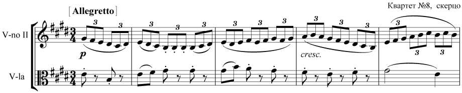

«Русские» квартеты (op. 59)
В истории жанра струнного квартета это, бесспорно, знаковые сочинения. В op.59 входят три квартета: по общей нумерации № 7, № 8, № 9. Все три настолько различны, что их объединение в единую серию можно объяснить, пожалуй, посвящением одному и тому же лицу – русскому послу в Вене графу А.Разумовскому. Кроме того, общая особенность стиля квартетов op. 59 связана с народными истоками тематизма и его национальной спецификой.
Андрей Кириллович Разумовский (1752-1836) – личность незаурядная. Умный, высокообразованный, обладавший изысканным художественным вкусом, он принимал деятельное участие в музыкальной жизни Вены конца XVIII – начала XIX века. В роскошном дворце русского вельможи царила атмосфера преклонения перед музыкой. Здесь собиралась посвященная, интеллектуальная публика, находили самый радушный прием лучшие музыканты Европы. Узы давнего знакомства связывали А.К.Разумовского с Йозефом Гайдном.
Редкий вечер в доме русского посла обходился без ансамблевого музицирования. С 1808 года он содержал собственный квартет, состоявший из талантливых молодых инструменталистов во главе со скрипачом Игнацем Шуппанцигом.1 Иногда сам хозяин тоже садился за пульт, исполняя партию второй скрипки. Квартет Шуппанцига впервые исполнил все камерно-инструментальные сочинения Бетховена, заложив традиции их интерпретации.
Свое «русское название» квартеты op. 59 носят с гораздо бόльшим основанием, чем гайдновские квартеты op. 33, посвященные великому князю Павлу Петровичу, будущему российскому императору. В отличие от Гайдна, Бетховен использовал в своем «русском опусе» подлинные русские народные песни. В квартете Фа мажор (ор.59 № 1) главной темой финала стала песня «Ах, талан ли мой, талан», в квартете ми минор (ор.59 № 2) народная мелодия появляется в трио скерцо. Это песня «Слава» («Уж как солнцу красному…»), позже ставшая всемирно знаменитой благодаря сцене коронации Бориса Годунова из оперы М.П. Мусоргского и «Царской невесте» Н.А. Римского-Корсакова, где она служит лейтмотивом Ивана Грозного.
Неизвестно, по чьей инициативе, собственной или Разумовского, композитор обратился в своих квартетах к русскому фольклору. Определенно можно говорить о его явной заинтересованности в русском и украинском музыкальном материале: она возникла еще до его сближения с Разумовским и не иссякла после завершения работы над квартетами op.59. Так, например, в фортепианных Вариациях на тему русского танца (1796) можно услышать один из вариантов «Камаринской»; в сборнике «Песни разных народов» (1816) имеются обработки песен «Во лесочке комарочков много народилось», «Ах, реченьки, реченьки», «Как пошли наши подружки», «Iхав козак за Дунай». Судя по названному сборнику или по бетховенским обработкам шотландских и ирландских песен, композитор глубоко чувствовал национальное своеобразие народных мелодий. Кроме того, для австрийской музыки славянские песенные истоки вообще не были чем-то чужеродным, о чем свидетельствует, в частности, творчество Й.Гайдна, Ф.Шуберта, И.Брамса.
Наиболее вероятным источником, откуда Бетховен мог почерпнуть народные русские мелодии, является «Собрание народных русских песен с их голосами» Н.Львова – И. Прача. Скорее всего, ноты сборника попали к Бетховену из богатейшей библиотеки Разумовского. Кроме того, по свидетельству Карла Черни, композитор читал статьи о русской музыке в венской «Всеобщей музыкальной газете». Знакомясь с мелодиями русских песен, которые печатались в нотных приложениях этого периодического издания, он многое помечал в них восклицательными знаками.
Квартеты op.59 обозначили большой сдвиг в развитии бетховенского квартетного письма, продемонстрировав симфонизацию камерного жанра. Не случайно в исследовательской литературе квартеты ор. 59 часто называются «квартетными симфониями» (Quartettsymphonien). Симфоничность проявляется и в глубине идей, в динамике их развития, и в трактовке форм (усиление сонатных принципов), и в оркестровом характере фактуры.
Op. 59 № 1
Общее настроение лирико-жанрового Седьмого квартета (Фа-мажор) определяют светлые, радостные чувства, контрастно оттененные скорбным Adagio. Преобладание пасторальных и народно-бытовых образов роднит этот квартет с «Пасторальной симфонией», воспевающей простые радости деревенской жизни и написанной в той же тональности. Вместе с тем, пасторальная стилистика здесь явно переосмыслена. Уже с самых первых тактов сочинения обращает на себя внимание дифференцированность квартетной ткани. Певучую главную тему, порученную виолончели, сопровождает не привычный солидный квинтовый бурдон в басу, а пульсирующая педаль средних голосов.
Все четыре (!) части квартета изложены в сонатной форме. Побочная тема первого сонатного allegro (с такта 60) мирно дополняет главную. Их внутреннее родство особенно ясно выявляется в заключительной партии, синтезирующей основные тематические элементы экспозиции.
Драматургия первой части бесконфликтна, однако она далека от идиллии. Один из новаторских моментов в ее форме – отсутствие повторенной экспозиции (впервые в жанре струнного квартета): развитие устремлено вперед. Масштабный и полифонически насыщенный разработочный раздел стоит вровень с симфоническими разработками Бетховена. Общий колорит здесь сильнейшим образом омрачается. Все модуляции следуют в бемольном направлении, важнейшим пунктом их назначения является ми-бемоль минор. В этой тональности изложено драматическое фугато в центре разработки, гораздо более развернутое, чем, скажем, фугато в огромной I части «Героической» симфонии.
Симфоничность формы особенно заметна в коде, где аккордовое изложение главной темы придает музыке оркестровое звучание.
Вторая часть квартета (Allegretto vivace е sempre scherzando, Си-бемоль мажор) – одно из самых своеобразных бетховенских скерцо, родственное народной русской музыке. Сходство проявляется не только в характере тематизма (основная тема напоминает славянскую колядку), но и в приемах его развития. Это вариантность на манер мелодического остинато. Во всех разделах сонатной формы, включая репризу и коду, налицо удивительная свобода тонального развития.
Третья часть, полная глубочайшего страдания (Adagio molto е mesto, фа-минор), является основной антитезой господствующим в сочинении образам радости, юмора, светлой лирики. Удивительно то, что эта музыка словно предвосхищает мелодику русского романса XIX века, в частности, некоторые элегические страницы глинкинской лирики. Л.В.Кириллина объясняет подобные ассоциации «эффектом обратной исторической перспективы, поскольку все русские композиторы, начиная с Алябьева, Березовского и Глинки, хорошо знали Квартеты ор. 59, и это знание так или иначе могло отразиться на их музыке»2.
В народно-жанровом финале на фоне заливчатой трели, украшающей доминантовый органный пункт, появляется русская тема «Ах, талан ли мой, талан». Ее мелодию сопровождает типичный для русской песни подголосок, из которого в дальнейшем рождается тема побочной партии.
С национальным характером музыкального материала связаны и другие стилистические особенности финала: ладовая переменность, использование приема вариаций на мелодию остинато.
Тема русской песни легко членится на мотивы. В разработке и в коде Бетховен использует это ее свойство, меняя части мелодии местами. Интересная деталь: минорный фрагмент основной темы в коде напоминает другую русскую песню – «Как ходил, гулял Ванюша».
Op. 59 № 2
Восьмой квартет (ми-минор) в «русском» квартетном цикле выделяется своим лиризмом, во многом родственном музыке Шуберта. Образные контрасты переключены здесь в область психологическую, будучи отражением внутренне сложной природы духовных процессов. Основой драматургии первой части является не столько антитеза главной темы с побочной, сколько изменчивость самой главной темы. Смятенно-элегическая кода части не разрешает душевной напряженности. Мысль устремлена в идеальную сферу – к возвышенному и торжественному Adagio (Ми мажор, сонатная форма).
Хоральная фактура главной темы, баховские аллюзии сообщают музыке Adagio молитвенный характер. При этом романтизация строгого жанра хоральных вариаций, наполнение его открытыми лирическими эмоциями, предвосхищают стиль «позднего» Бетховена.
В скерцо (Allegretto, ми минор) элегическим крайним частям контрастирует народная жанровость трио. Использованная в трио русская песня «Слава» разработана в традиционной классической манере: строгое фугато с удержанным противосложением.

Есть здесь и предвосхищение будущих «глинкинских» вариаций на неизменную мелодию, поскольку второе проведение фугато идет с варьированным сопровождением, что более соответствует русскому складу темы. По словам Л.В. Кириллиной, «опыт приживления фольклорного «дичка» к мощному древу европейской традиции увенчался здесь полным успехом»3.
Решающей стадией развития в восьмом квартете является энергичный финал, написанный в форме рондо-сонаты с весьма развитой разработкой. Его яркая, энергичная музыка, при основной тональности ми минор, фактически звучит в До мажоре. В главной теме ми минор затрагивается только в самом конце предложений. Активное отстранение минора, быстрые «упрямые» повороты в До мажор при многократных повторениях темы создают особый акцент на этой светлой краске.
Op. 59 № 3
В завершающем op.59 Девятом квартете (До мажор) подлинных русских мелодий нет, тем не менее, и в нем ощутим славянский колорит, особенно явно – в чудесной медленной части, Andante con moto quasi Allegretto (ля минор). Полифоническое мастерство финала этого квартета вызвали сравнение с симфонией «Юпитер» В.А. Моцарта. Это первый полифонический финал у Бетховена, хотя его форма – не собственно «ученая» фуга, а тот особый тип классической сонаты, где главная партия строится как фугато, и вся ткань насквозь полифонична.
1 С этим ансамблем связаны первые открытые публичные вечера квартетной музыки (1804-1805).
2 Кириллина Л. В. Бетховен. Жизнь и творчество: в 2 т. М., Научно-издательский центр «Московская консерватория», 2009. С. 64.
3 Там же, с.73.